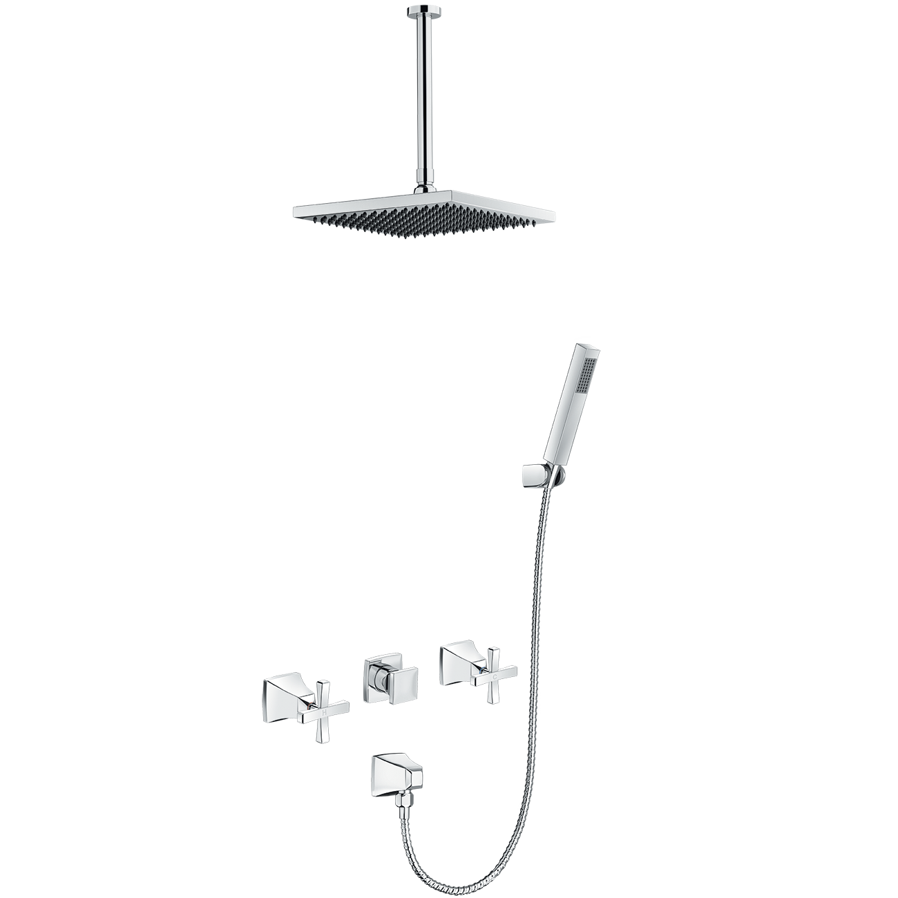
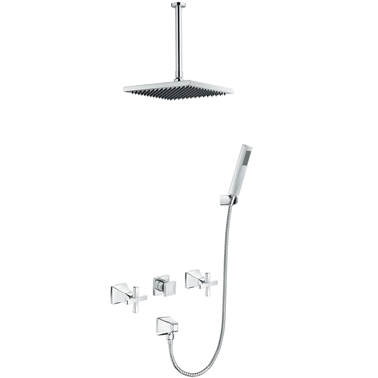
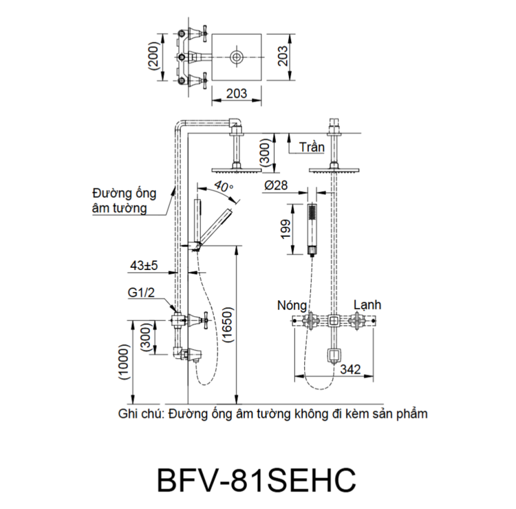

Sen tắm âm tường BFV-81SEHC đến từ thương hiệu thiết bị vệ sinh INAX, được thiết kế để mang lại sự tiện nghi, bền bỉ và vẻ đẹp sang trọng cho mọi không gian phòng tắm. Với phong cách thiết kế tân cổ điển đặc trưng, mẫu sen này là lựa chọn hoàn hảo cho các phòng tắm phong cách retro, giúp tiết kiệm diện tích và tạo nên tổng thể hài hòa, tinh tế.Thiết kế sen tắm âm tường BFV-81SEHCThiết kế sen tắm âm tường BFV-81SEHC theo phong cách retro với các đường nét tân cổ điển mang lại vẻ đẹp đẳng cấp và khác biệt cho không gian thư giãn.Kết cấu âm tường của sản phẩm giúp tối ưu hóa không gian phòng tắm, tạo cảm giác rộng rãi và gọn gàng hơn.BFV-81SEHC trang bị 2 vòi vặn riêng biệt để điều chỉnh lưu lượng nước và nhiệt độ, giúp người dùng kiểm soát nguồn nước nóng lạnh một cách chính xác.Trải nghiệm tắm cá nhân hóaSen tắm âm tường BFV-81SEHC bao gồm bát sen đầu dạng cây và tay sen đi kèm, giúp người dùng dễ dàng cá nhân hóa trải nghiệm tắm theo ý thích. Đầu và vòi xả sản phẩm được thiết kế cho dòng nước mạnh mẽ, mang lại cảm giác sảng khoái và thư giãn tuyệt đối.Ngoài ra, với tay sen mạ Crom/Nikel có khả năng phun rửa mạnh mẽ, sản phẩm còn hỗ trợ đắc lực cho nhu cầu vệ sinh cá nhân hàng ngày.Chất lượng bền bỉ, kết cấu vững vàngThân van đồng thau: Thân van được đúc từ đồng thau nguyên chất, đảm bảo độ bền cao và an toàn cho nguồn nước.Kết cấu vững vàng: Cấu tạo bên trong được thiết kế chắc chắn, đảm bảo sự ổn định tuyệt vời trong suốt quá trình vận hành lâu dài.Lớp mạ cao cấp: Bát sen và tay sen được hoàn thiện bằng lớp mạ Crom/Nikel chất lượng cao, mang lại bề mặt sáng bóng, chống ăn mòn và dễ dàng vệ sinh.Vận hành ổn địnhSen tắm âm tường BFV-81SEHC hoạt động hiệu quả trong dải áp lực nước tiêu chuẩn 0.15 MPa - 0.75 MPa, đảm bảo dòng chảy ổn định và mạnh mẽ.Video giới thiệu sen tắm INAXBản vẽ sen tắm âm tường BFV-81SEHCThông số kỹ thuậtChất liệuThân van đồng thau mạ Crom/NikelLoạiSen tắm âm tường nóng lạnhKích thước-Thiết kếTân cổ điển, 2 vòi vặn điều chỉnhThương hiệuINAXTính năng- Bao gồm bát sen đầu và tay sen linh động - Kết cấu âm tường tiết kiệm diện tích - Dòng nước mạnh mẽ, tạo cảm giác sảng khoáiÁp lực nước0.15 MPa - 0.75 MPaKhác- Hotline tư vấn và bảo hành: 18006633
Sen tắm âm tường BFV-81SEHC
Vòi chậu thương hiệu INAX.
Đã cập nhật danh sách yêu thích.
DANH MỤC: Vòi chậu
MÃ SẢN PHẨM: BFV-81SEHC
DEPTH: mm
HEIGHT: mm
WIDTH: mm
Sen tắm âm tường BFV-81SEHC đến từ thương hiệu thiết bị vệ sinh INAX, được thiết kế để mang lại sự tiện nghi, bền bỉ và vẻ đẹp sang trọng cho mọi không gian phòng tắm. Với phong cách thiết kế tân cổ điển đặc trưng, mẫu sen này là lựa chọn hoàn hảo cho các phòng tắm phong cách retro, giúp tiết kiệm diện tích và tạo nên tổng thể hài hòa, tinh tế.Thiết kế sen tắm âm tường BFV-81SEHCThiết kế sen tắm âm tường BFV-81SEHC theo phong cách retro với các đường nét tân cổ điển mang lại vẻ đẹp đẳng cấp và khác biệt cho không gian thư giãn.Kết cấu âm tường của sản phẩm giúp tối ưu hóa không gian phòng tắm, tạo cảm giác rộng rãi và gọn gàng hơn.BFV-81SEHC trang bị 2 vòi vặn riêng biệt để điều chỉnh lưu lượng nước và nhiệt độ, giúp người dùng kiểm soát nguồn nước nóng lạnh một cách chính xác.Trải nghiệm tắm cá nhân hóaSen tắm âm tường BFV-81SEHC bao gồm bát sen đầu dạng cây và tay sen đi kèm, giúp người dùng dễ dàng cá nhân hóa trải nghiệm tắm theo ý thích. Đầu và vòi xả sản phẩm được thiết kế cho dòng nước mạnh mẽ, mang lại cảm giác sảng khoái và thư giãn tuyệt đối.Ngoài ra, với tay sen mạ Crom/Nikel có khả năng phun rửa mạnh mẽ, sản phẩm còn hỗ trợ đắc lực cho nhu cầu vệ sinh cá nhân hàng ngày.Chất lượng bền bỉ, kết cấu vững vàngThân van đồng thau: Thân van được đúc từ đồng thau nguyên chất, đảm bảo độ bền cao và an toàn cho nguồn nước.Kết cấu vững vàng: Cấu tạo bên trong được thiết kế chắc chắn, đảm bảo sự ổn định tuyệt vời trong suốt quá trình vận hành lâu dài.Lớp mạ cao cấp: Bát sen và tay sen được hoàn thiện bằng lớp mạ Crom/Nikel chất lượng cao, mang lại bề mặt sáng bóng, chống ăn mòn và dễ dàng vệ sinh.Vận hành ổn địnhSen tắm âm tường BFV-81SEHC hoạt động hiệu quả trong dải áp lực nước tiêu chuẩn 0.15 MPa - 0.75 MPa, đảm bảo dòng chảy ổn định và mạnh mẽ.Video giới thiệu sen tắm INAXBản vẽ sen tắm âm tường BFV-81SEHCThông số kỹ thuậtChất liệuThân van đồng thau mạ Crom/NikelLoạiSen tắm âm tường nóng lạnhKích thước-Thiết kếTân cổ điển, 2 vòi vặn điều chỉnhThương hiệuINAXTính năng- Bao gồm bát sen đầu và tay sen linh động - Kết cấu âm tường tiết kiệm diện tích - Dòng nước mạnh mẽ, tạo cảm giác sảng khoáiÁp lực nước0.15 MPa - 0.75 MPaKhác- Hotline tư vấn và bảo hành: 18006633
DANH MỤC: Vòi chậu
MÃ SẢN PHẨM: BFV-81SEHC
DEPTH: mm
HEIGHT: mm
WIDTH: mm